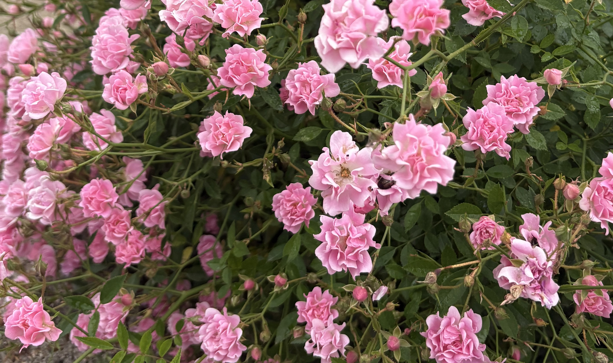

もがのはなさがしへようこそ

日常で出会う花を撮ったり、 ただ見たり、それを編み物や絵にしたりすることが好きです。 花にふれることでこころが穏やかになり、 考えすぎたり思いつめたりした時のよい息抜きになります。
日々の中で「すてきだ」と感じた花や、 さまざまな表現で制作した作品を紹介していきます。
今日出会った花
今日見つけた花の写真や絵、 その日の天気や感じたことを紹介します。
更新日：
今までに出会った花
今までに見つけたお気に入りの花や、 写真・イラスト作品などを紹介します。
更新日：
見つけたい花
この季節に咲く花や、 これから見つけたい花を紹介します。
更新日：